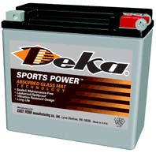
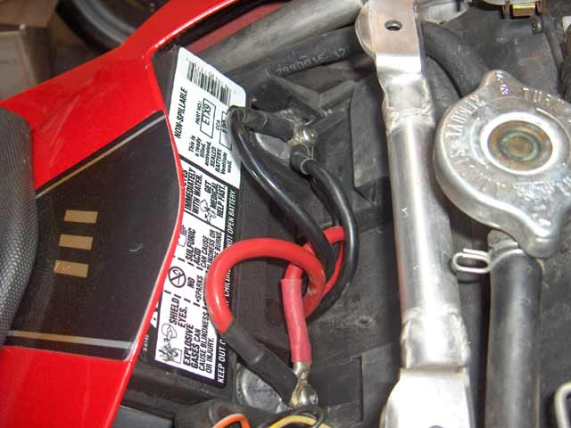
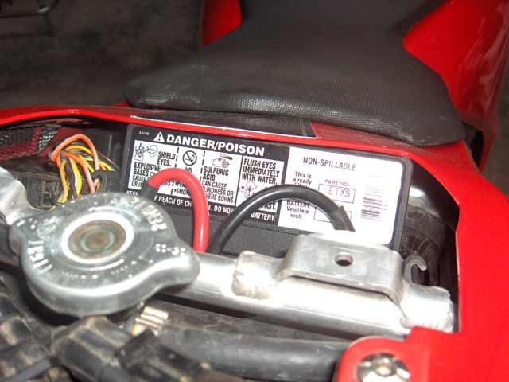
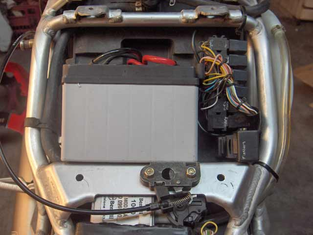
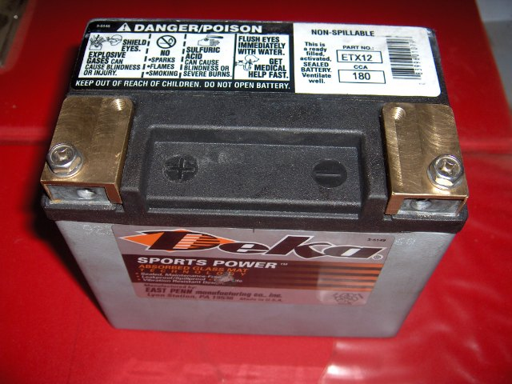
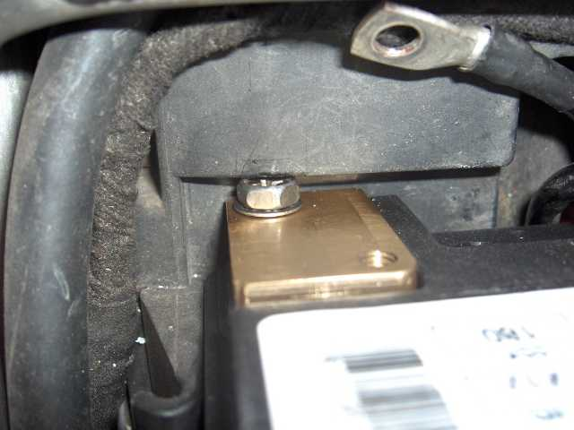
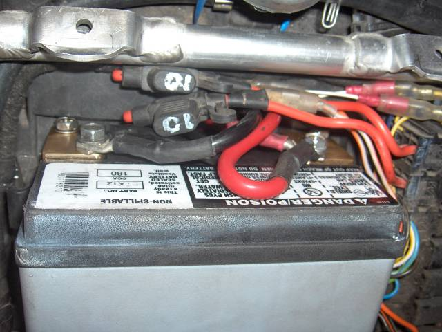
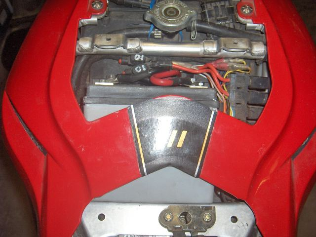

903 Tornado Tre Battery
(25 Aug 2022)
OEM: Dynavolt - Part Number: YT12B-4
| Voltage: | 12 V | Capacity: | 10 Ah |
| Dimensions: | 151mm x 70mm x 131 mm | Type: | Lead Acid Gel |
Equivalent: Yuasa Part Number: YT12B-BS
| Voltage: | 12 V | Capacity: | 10 Ah | CCA: | 125 A |
| Dimensions: | 153mm x 70mm x 130mm | Type: | Lead Acid Gel |
We all know that this battery barely produces the goods. What we need is more CCAs
-- lots more.
The battery compartment is deeper at the base than the top, so a deeper, but lower battery,
of suitable dimensions, will also fit. KnowALittle was the first to report that a
153 x 87 x 111 unit will fit. This has been confirmed by yours truly.
KnowALittle - Benelliforum - 13 Apr 2006
"I have fitted a YTZ14-BS to my bike which ups the amps but still (with a slight squeeze) fits in the space
provided by Mr Benelli"
*Sealed non-spillable AGM battery
*Maintenance-free
*12 volt 11.2 amp hour
*145 cold cranking amps
*6"L x 3 7/16"W x 4 3/8"H
153 x 87 x 111 mm
Some of the most powerful batteries in decreasing CCA (& cost!) order are :-
Yuasa YTZ14S - 150 x 87 x 110 - 230 CCA
Yuasa YTZ12S - 150 x 87 x 110 - 210 CCA
Deka ETX9BS - 150 x 88 x 106 - 120 CCA @ 0°F
The Deka spec is VERY conservative. I've seen it deliver 400 Amps, at 20°C. Not sure what the YTZ's can do
at 20°C, probably even more, but they do retail for about AUD240, while the ETX9 comes in at about AUD160
(mid 2007 prices)
Since fitting the Deka ETX9, Nelli cranks faster and catches more easily. There's never been a hint of
difficulty.
|  |
 |
| ETX9BS | Terminals clear panel when mounted down |
|  |
 |
| snug, isn't it! |
3 Years Later
The ETX9 had been having difficulty cranking a hot engine. Given 5 minutes, it'd be ok, but it didn't instil confidence.
I tested it at 200 A at 25C, which is well down on what it was new, so it's time to do something about it.
Laurence has managed to install a 150x87x130, so I thought I'd give it a go. The ETX9 is rated at 110 CCA, & the ETX12 at 180 CCA,
so it should be a significant improvement.
When mounted with the terminals down, clearance is an issue. So I made up some terminal extenders, to shift the connection point a little higher.
|  |
 |
| ETX12 with extended terminals | Terminals just clear the moulding |
|  |
 |
| Wired up | Fitted |
Lithium
Laurence is using a Shorai LFX18A1-BS12 and so is pilgrim.
WikingTNT is using a Motocell Lithium Ion 20Ah / 360cca in his TNT
I've been using an
SSB Powersport LH12B-4
since November 2014, supplied to me by Autologic Services of Prestons NSW (04 1138 0254).
As a testament to Lithium batteries, I parked Nell in the garage in March 2016 and without any charging she fired straight up again in November.
Try doing that with a lead-acid battery!
It's now August 2022 and it's still up to the task. That battery is rated at 400 CCA new. I had it tested yesterday and it can deliver 238 Amps.
Nell needs 200 to start when hot, so it's near end of life. It's outlasted 2 lead acid batteries, so money well spent.